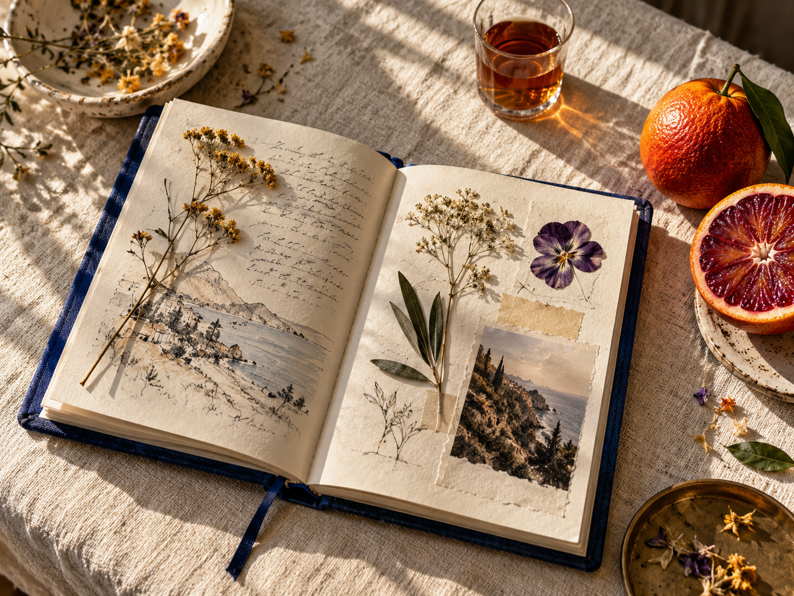

NOTES ON LIVING A LITTLE BETTER
A JOURNAL FOR THE CURIOUS — NO. 001
Pay
attention.
A little more wonder in the everyday. Fieldnotes is an independent journal about the things that make a life feel like yours.
↓TAKE YOUR TIME. YOU’RE RIGHT ON TIME.
FIELDNOTES
NO. 01FIG. 01 A RECORD OF WHAT WE NOTICE
IDEAS TO KEEP
IN YOUR POCKET✳READ SLOWLY
· SINCE MMXXIV
IN YOUR POCKET✳READ SLOWLY
· SINCE MMXXIV
IN GOOD COMPANY, ALWAYS.SCROLL TO WANDER ↓35° 41′ 22″ N / 139° 41′ 30″ E
A NOTE FOR YOUR INBOX
Make Sunday
mean something.
One thoughtful letter, filled with things to read, ideas to sit with, and places worth getting lost in.
WITH CARE,The Fieldnotes team
THE FIELD GUIDE
Things worth
a closer look.
A growing collection of thoughts, stories, and happy little detours. Pull up a chair.
Gathering the latest stories…
✳
Good things take a little time.
We’re working on the first collection. Leave your email above and we’ll let you know when it’s ready.
THAT’S ALL FOR NOW.Until next Sunday ↗
“
A NOTE FROM THE EDITOR
The best ideas don’t arrive loudly. They find us when we slow down enough to notice.
— THE FIELDNOTES TEAMBEHIND THE PAGES
The writing room.
Your stories
Draft, publish, and keep your ideas in one place.
Loading stories…
Categories
Give your stories a place to call home.
Your readers
People who asked to hear from you.